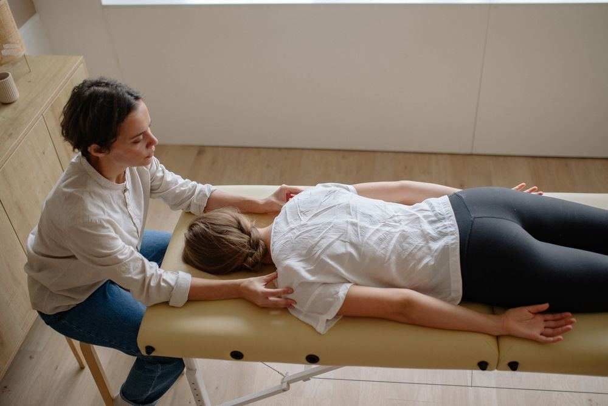
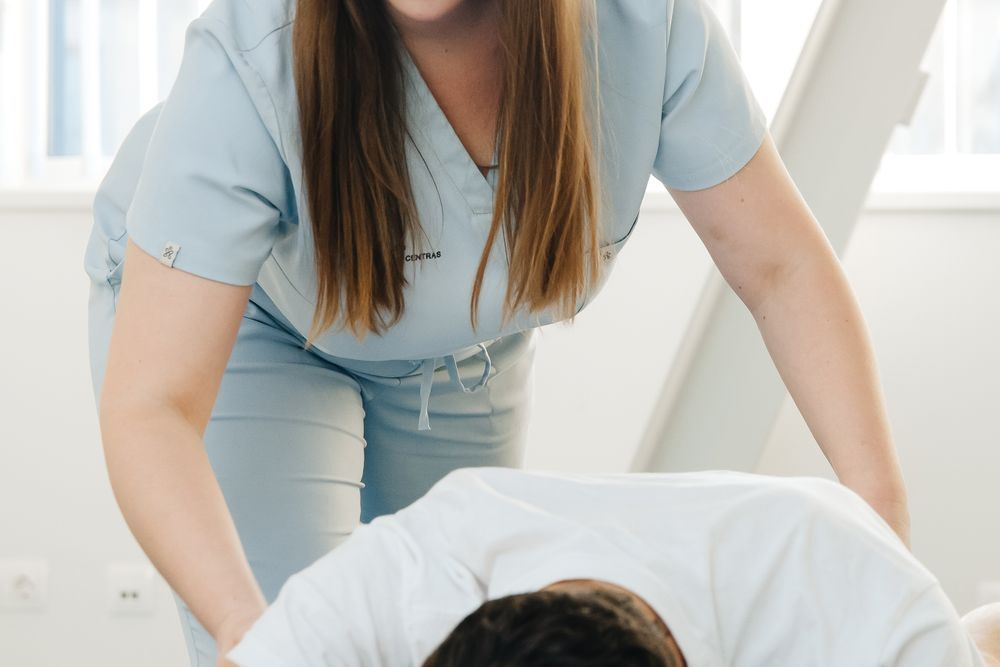

Jour 1Repérer et alerter
Alerte, inconscience, PLS, fausse route et obstruction, hémorragies, malaise à l'effort.
Vos patients travaillent à l'effort, se lèvent, marchent, mangent devant vous. Ils sont souvent âgés, cardiaques, neurologiques ou fragiles. Quand l'un d'eux bascule, vous êtes seul en séance ou à deux pas du plateau technique. Ces trois jours vous préparent à ce moment.
Prix : ancien tarif 450 € 385 € TTC

L'arrêté du 30 décembre 2014, modifié le 1er juillet 2019, ouvre l'AFGSU 2 à toutes les professions de santé de la 4e partie du Code de la santé publique. En rééducation, le risque ne vient pas d'actes invasifs mais du mouvement, de l'effort et de la déglutition. Choisissez votre profession :
Réadaptation cardiaque, rééducation post-opératoire, kinésithérapie respiratoire, sport : vos patients sont mis à l'effort, parfois au-delà de ce qu'ils ont fait depuis des mois.
À domicile, en EHPAD ou en centre, vous intervenez auprès de personnes âgées, handicapées ou en perte d'autonomie, souvent seul et loin du matériel d'urgence.
Rééducation de la déglutition, patients post-AVC, maladies neurodégénératives, jeunes enfants : la fausse route est votre risque premier, mais pas le seul.

Kiné : arrêt cardiaque sur le tapis de marche, RCP au sol.
Ergo : personne inconsciente au domicile, alerte et PLS.
Ortho : obstruction totale en séance de déglutition.
Kiné : malaise à l'effort en réadaptation cardiaque.
Ergo : chute lors d'un transfert lit-fauteuil.
Ortho : malaise d'un patient post-AVC.
Pour tous : votre centre de rééducation libère des lits lors d'un plan blanc. Organisation, transferts, rôle de chacun.
Prix : ancien tarif 450 € 385 € TTC
Kinés, ergothérapeutes et orthophonistes suivent la même formation, au même tarif, avec des cas pratiques adaptés à chaque exercice.
Également dans votre cabinet pluridisciplinaire, votre centre de rééducation ou votre maison de santé.
Alerte, inconscience, PLS, fausse route et obstruction, hémorragies, malaise à l'effort.
RCP adulte, enfant, nourrisson, défibrillateur, chute et relevage, traumatismes.
Brûlures, hygiène, accouchement inopiné, risques collectifs, mises en situation par profession, validation.
Oui, le masseur-kinésithérapeute exerce une profession de santé de la 4e partie du Code de la santé publique, ce qui le place dans le public de l'AFGSU 2. L'attestation est intégrée à sa formation initiale et doit être réactualisée tous les 4 ans. En cabinet comme en centre de rééducation, vous faites travailler des patients à l'effort : l'urgence fait partie du risque.
Oui, ergothérapeutes et orthophonistes relèvent eux aussi de la 4e partie du Code de la santé publique, comme les kinésithérapeutes. L'AFGSU 2 leur est donc ouverte, et elle est intégrée à la formation initiale de nombreuses filières de rééducation. Les sessions réunissent souvent les trois professions, ce qui reflète le travail en équipe des centres de rééducation.
Arrêtez immédiatement l'effort et installez le patient allongé ou assis selon son état. Recherchez une douleur thoracique, un essoufflement inhabituel, des palpitations, des sueurs, une confusion. Mesurez pouls, tension et saturation si possible. Appelez le 15 devant tout signe de gravité ou si les symptômes persistent. La formation met l'accent sur les signes d'alerte à l'effort.
Faites appeler le 15 et apporter le défibrillateur, puis débutez immédiatement le massage cardiaque sur un plan dur, au sol ou sur un tapis ferme. Posez les électrodes dès que le défibrillateur est là et suivez ses consignes. Relayez-vous toutes les deux minutes. En cabinet de groupe, chacun doit savoir où se trouve le défibrillateur.
Ne le relevez pas immédiatement. Évaluez sa conscience, demandez-lui où il a mal, recherchez une douleur de hanche, une déformation, un choc à la tête ou un traitement anticoagulant. En l'absence de signe de gravité, relevez-le avec une technique adaptée. Sinon, immobilisez, couvrez et appelez le 15. Toute chute doit être tracée et signalée au médecin.
Si le patient tousse, encouragez la toux, penché en avant, et ne tapez pas dans le dos. Si la toux devient inefficace et qu'il ne peut plus parler ni respirer, donnez jusqu'à cinq claques entre les omoplates puis cinq compressions abdominales, en alternance. Chez un patient en fauteuil, la technique s'adapte. Appelez le 15 si la gêne persiste.
Oui, plusieurs mises en situation se déroulent au domicile, avec le matériel du quotidien. Vous apprenez à alerter avec précision, à guider l'aidant présent, à repérer un défibrillateur public et à relever une personne âgée en sécurité. Les essais d'aides techniques et les transferts sont des moments à risque de chute, abordés pendant la formation.
Arrêtez l'exercice et immobilisez la zone blessée dans la position où elle se trouve, sans tenter de réduire une déformation. Appliquez du froid sur une entorse ou une contusion, comprimez une plaie qui saigne. Appelez le 15 devant une déformation, une douleur intense, une plaie importante ou un traumatisme du rachis. Le module 2 détaille ces gestes.
Douleur ou oppression thoracique, essoufflement disproportionné, palpitations, malaise, pâleur, sueurs, désaturation marquée ou chute de tension à l'effort doivent faire arrêter l'exercice. Surveillez aussi la récupération. Respectez les seuils fixés par la prescription. Si les symptômes persistent au repos, appelez le 15. La formation reprend ces critères.
Elle coûte 385 € TTC, au lieu de 450 €, quelle que soit votre profession, pour 21 heures sur 3 jours. Le tarif comprend l'enseignement, l'usage des mannequins adulte, enfant et nourrisson, du défibrillateur de formation et du matériel d'urgence, ainsi que l'attestation délivrée par le CESU.
L'attestation AFGSU de niveau 2 vient du CESU, Centre d'Enseignement des Soins d'Urgence, après 21 heures suivies sans absence et des gestes validés. Elle est valable 4 ans. Avant l'échéance, une formation de réactualisation permet de la prolonger ; après, il faut repasser la formation complète.
Inscrivez-vous à une nouvelle formation AFGSU 2 complète de 21 heures, car la réactualisation courte n'est généralement plus possible après expiration. Indiquez dans le formulaire votre profession et la date de votre dernière attestation : nous vous proposons une session compatible avec votre planning de patients.
L'AFGSU 1, en 14 heures, s'adresse à tous les personnels d'une structure, y compris le secrétariat ou les agents d'accueil. L'AFGSU 2, en 21 heures, est réservée aux professionnels de santé comme les kinés, ergothérapeutes et orthophonistes. Elle ajoute l'usage du matériel d'urgence, le travail en équipe et les urgences potentielles.
Oui, la formation peut se dérouler dans votre cabinet pluridisciplinaire, votre centre de rééducation ou votre maison de santé, pour 6 à 12 professionnels. Les scénarios utilisent vos salles, vos plateaux techniques et votre défibrillateur. Kinés, ergothérapeutes et orthophonistes peuvent être formés ensemble. Un devis est établi selon l'effectif.
Indiquez votre profession, votre ville et vos disponibilités. Nous vous proposons une date. Par téléphone : 07 80 91 23 35.